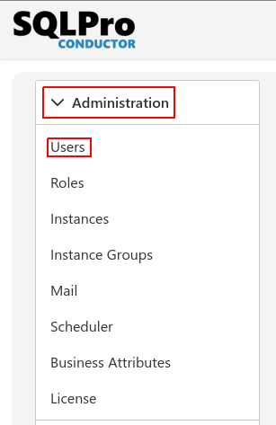
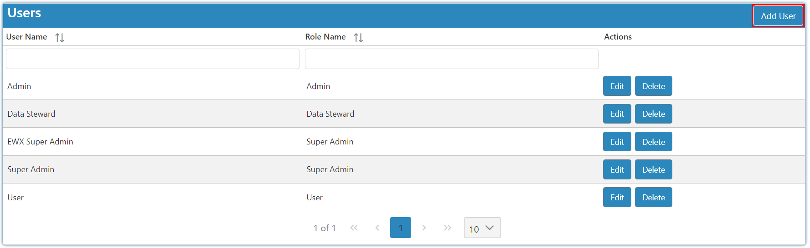
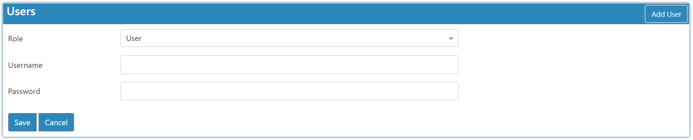

Introduction
To view, update or create users select the settings Icon and choose users:

By default, you will have a Super Admin, Admin, and User which correlate with the internal roles that come standard with Conductor4SQL.

When adding or editing users you set their user name, password, and role. By default, the internal User role, which is a view-only role, will be assigned to newly created users if you do not assign them a custom role. You can create roles as long as you have AdminRoleUpdate permission.
